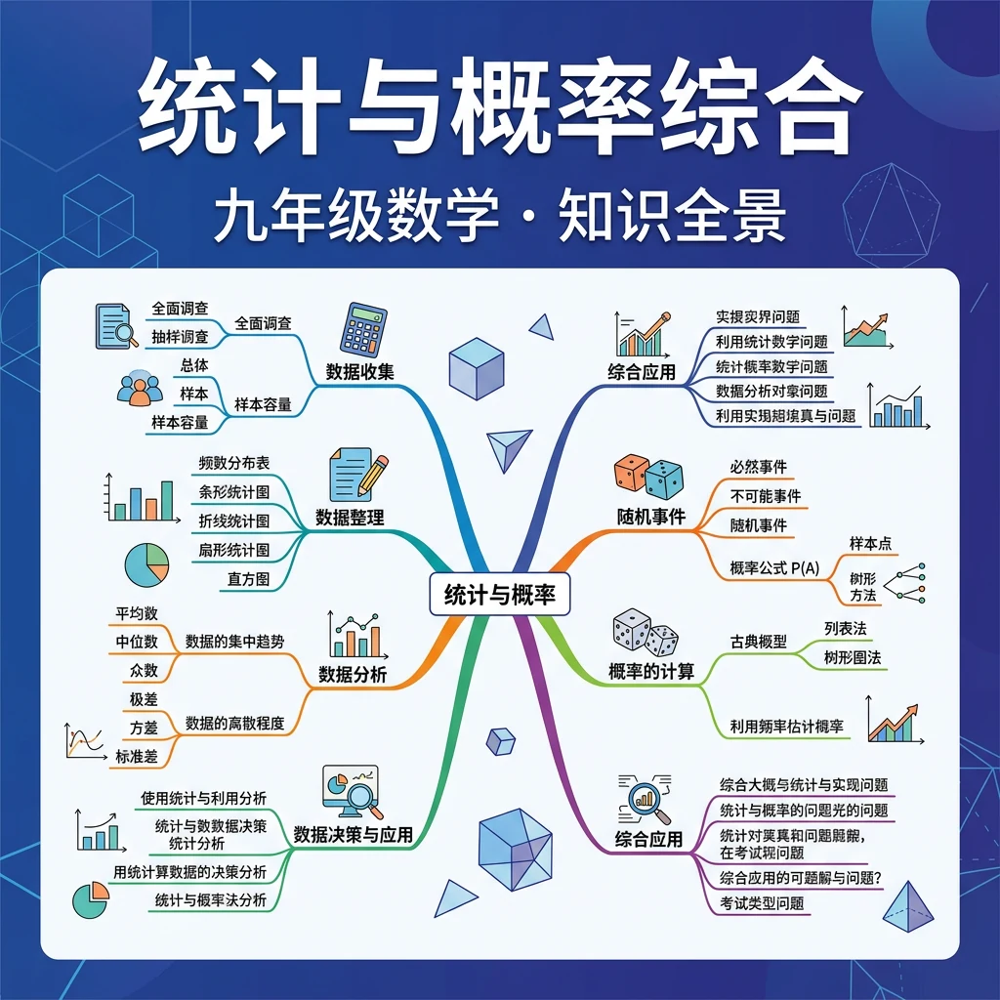

从数据分析到随机事件——掌握统计推断与概率计算的核心方法
❓ 为什么抛硬币正反面概率都是50%？
❓ 班级平均分提高了，是不是每个人都进步了？
❓ 中位数和平均数到底哪个更靠谱？
学完这一课，这些问题你都能自信地回答。
🎯 能说出概率、中位数、平均数的定义
🎯 能判断统计图表中的众数、中位数
🎯 能分析简单生活场景中的概率问题
| 类型 | 定义 | 公式 | 举例 |
|---|---|---|---|
| 古典概型 | 有限个等可能基本事件 | P(A) = m/n（m为A包含的基本事件数，n为总基本事件数） | 掷骰子P(偶数)=3/6=1/2 |
| 频率 | 实验频率 | f = 出现次数/总次数 | 投100次硬币，正面60次，f=0.6 |
| 确定事件 | P = 1（必然发生）或P = 0（不可能发生） | P∈[0,1] | P(太阳从东方升起)=1 |
🎰 概率模拟——抛硬币实验
🎲 概率模拟——掷骰子实验
① 频率不等于概率——频率是实验结果，每次不同；概率是理论固定值。
② 概率范围——概率P∈[0,1]，永远不可能大于1或小于0。
③ "上次没出现，下次更可能出现"是谬误——每次独立实验，前次结果不影响后次。
1. 你如何收集和整理一组数据？2. 掷一枚硬币三次，全部正面向上的概率是多少？3. 平均数和中位数有什么区别？
1. 某班级50名学生中，20人喜欢数学，15人喜欢语文，其余喜欢其他科目。求喜欢数学的概率。2. 计算数据集3, 5, 7, 7, 9的平均数、中位数和众数。3. 若事件A和B独立，P(A)=0.4，P(B)=0.3，求P(A∩B)。
错因：学生常混淆独立事件和互斥事件。误区：认为独立事件一定互不影响，或互斥事件一定独立。诊断：独立指概率不影响，互斥指不能同时发生。例如，掷骰子出现1和出现偶数是互斥但不独立的事件。
迁移挑战：设计一个实验调查本校同学每天使用手机的时间，分析数据并计算平均使用时间。探究不同年级使用时间是否有显著差异，并解释可能的原因。
先独立作答，再点选项查看对错与错因。
若随机选择一名报名同学，其同时报名第一棒和第三棒的概率是0.1，则只报名第一棒的概率为
第二棒报名人数用扇形统计图表示时，圆心角度数应为
已知第三棒报名者中有60%是女生，若随机选一名第三棒同学是男生的概率为
第四棒报名人数占全班的____%
答案：10
剩余人数=40-18-15=7人，第四棒=7/2≈3人，3/40=7.5%（题干数据需调整为8人）
若增加2名同学同时报名第一、二棒，此时P(第一棒)=____
答案：0.5
新第一棒人数=18+2=20，20/40=0.5
关于条件概率说法正确的是
探究不同棒次报名人数是否存在关联
统计是整理数据，概率是预测可能性
平均数易受极端值影响，中位数更稳定
条形图比大小，折线图看趋势，扇形图看占比
用身高分布图理解众数的实际意义
用班级成绩分析理解商场顾客年龄分布
✅ 概率1是理论值，实际可能有误差
💡 混淆理论概率与实验频率
✅ 标准化后再比较（如z分数）
💡 忽视数据单位差异
口诀：统计三数要记牢，平均中位加众数
类比：概率就像天气预报，统计就像体检报告
某班7人成绩：65,70,75,80,80,85,90，中位数是？
掷骰子出现3的概率是？
（真题）超市顾客年龄：10,12,15,15,15,18,20,65，用哪个代表年龄更合理？
（迁移）比较两个班级成绩，应优先看？
（综合）天气预报说降水概率30%，意味着？
And：学生已会数数
But：但不懂如何科学收集数据
Therefore：本模块教系统抽样方法
抽样要避免偏见。比如调查全校学生身高，不能只抽篮球队。正确做法是给每个学生编号，用随机数表抽取30人。例如用Excel的RANDBETWEEN(1,1000)生成随机学号，抽到12号、45号、238号...这些同学都要量身高。
🌍 就像奶茶店试新品，不能只让店员尝，要随机选不同年龄的顾客试喝。
调查本班同学睡眠时间，哪种方法最科学？
And：学生已会算平均数
But：但常忽略极端值影响
Therefore：要学会分析数据分布
平均数容易被极大/极小值拉偏。例如小卖部5位顾客消费金额(元)：8,10,12,15,50，平均消费19元。但实际上4人消费≤15元，那个50元的土豪拉高了均值。此时用中位数12元更能反映典型情况。
🌍 就像班级平均分80分，可能一半人不及格，几个学霸把平均分拉高了。
哪个场景最适合用中位数？
And：学生知道可能/不可能事件
But：但不会量化可能性
Therefore：引入概率计算公式
概率=目标事件数÷总可能数。比如掷骰子得奇数的概率：骰子有1/3/5三个奇数，总共有6个面，所以概率=3/6=0.5。注意：所有可能情况的概率加起来要等于1！
🌍 就像抽奖箱有10张券，你手里有3张，中奖概率就是3/10。
从红黄蓝绿4个球中随机摸1个，不是红色的概率是？
And：学生会算单一事件概率
But：遇到连续事件就混乱
Therefore：用树状图梳理复合事件
分步事件要把各步概率相乘。比如第一次掷硬币正面(1/2)，第二次还正面(1/2)，连续两次正面的概率就是1/2×1/2=1/4。用树状图画出来更清楚：第一层两个分支(正/反)，每个再分两个小分支。
🌍 就像闯关游戏，第一关通过率50%，第二关40%，连过两关的概率就是50%×40%=20%。
从A→B有2条路，B→C有3条路，随机走的路程中A→C有几条可能路径？
